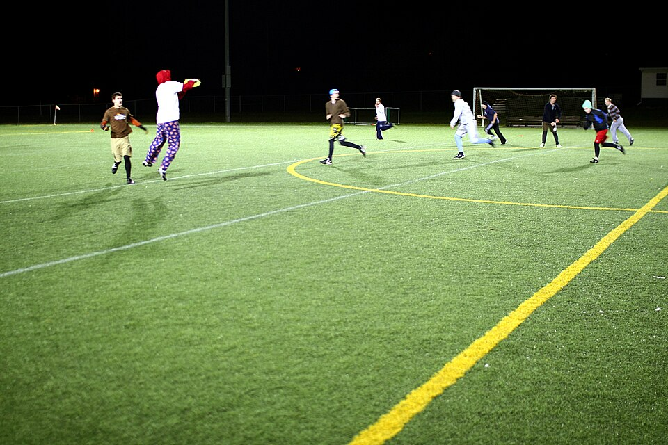
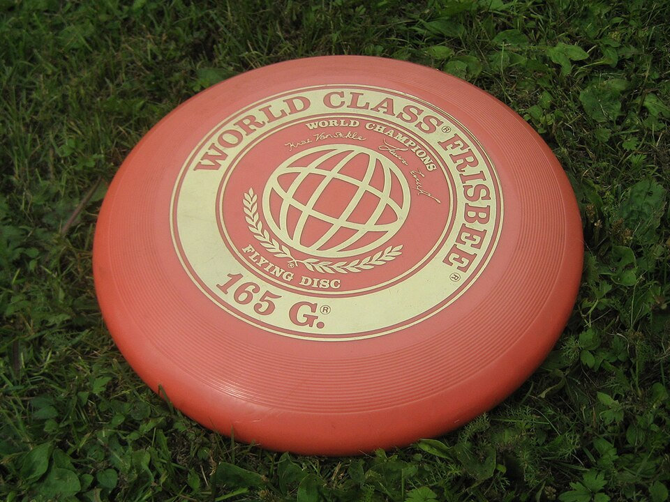

極限飛盤（Ultimate）
有點像「美式足球＋籃球」，但完全不能有身體碰撞。

- 人數：每隊 7 人上場（兒童賽常改成 5 人，或縮小場地）
- 怎麼得分：場地兩端各有一個得分區，在對方得分區裡接到隊友傳來的飛盤，就得 1 分
- 拿到飛盤就不能跑：只能用一隻腳當軸心轉身（像籃球的中樞腳），靠傳盤前進
- 10 秒限制：防守者會在旁邊數秒，數到 10 還沒傳出去就換對方進攻
- 換攻守：飛盤掉地、出界、被對方攔截或打掉，就換對方進攻
- 比賽長度：通常先得到 15 分的隊伍贏，兒童賽會縮短分數或限時
最特別的地方：沒有裁判！球員自己判犯規，有爭議時雙方當場溝通解決，這叫做「飛盤精神」（Spirit of the Game）。賽後兩隊還會互相評「精神分」，很多比賽另外設有「最佳精神獎」，在飛盤圈裡很受重視。
躲避飛盤
- 規則跟躲避球很像：分內場、外場，用飛盤丟中對方內場的人，被丟中就出局
- 用的是軟布或泡棉飛盤，被丟到不太會痛，比較安全
- 重點是接盤、閃躲、快速出手，還有隊友之間的默契
- 台灣很多縣市都有國小躲避飛盤錦標賽，很熱門
為什麼飛盤比賽很吸引人？

- 飛盤飛行很好看：飛盤會轉彎、飄浮、急墜，常常出現飛撲接盤（layout）的精彩畫面
- 人人都有機會表現：拿到飛盤就不能跑，一定要傳盤，不會變成一個人單打獨鬥
- 重視品格：自己當裁判，邊比賽邊學誠實、尊重和溝通
- 男女可以同場：很多比賽是混合組，男生女生一起配合
- 入門門檻低：一個飛盤、一塊空地就能練
去看比賽的小建議
- 注意場上沒有人帶著飛盤跑，大家都在「跑位」接盤，這就是戰術
- 有球員舉手喊「Foul！」，比賽會停下來讓雙方討論，屬於正常流程
- 孩子接到盤、做出好防守，或展現好風度時，都很值得加油 👏